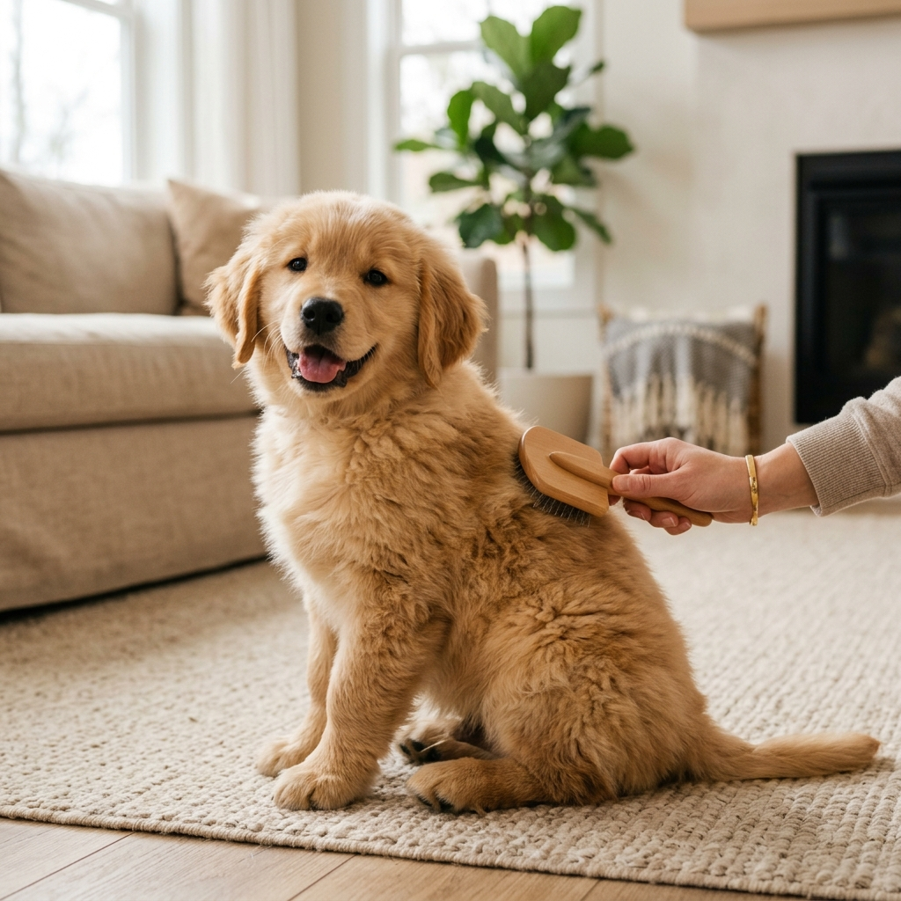

Grooming • June 20, 2026
5 Essential Tips for Grooming Your Dog at Home
Regular grooming keeps your dog healthy and clean. Discover simple techniques for brushing, bathing, and clipping nails without stress.
Read Full Post